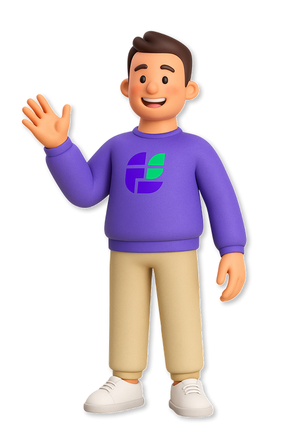

Отвечает гостям в реальном времени через Max, VK и Telegram.
Снижает нагрузку на персонал и экономит бюджет организатора.

Flexberry Elaro — это интеллектуальный чат-бот на базе LLM, который отвечает гостям мероприятий в реальном времени через популярные мессенджеры. Организатор загружает расписание, карту и FAQ — бот автоматически строит сценарии диалогов и начинает помогать гостям.
Как это работает для гостя:
Гость переходит в бота по QR-коду на билете, сайте или программе
Задаёт вопрос — бот отвечает по сценарию или передаёт живому оператору
Организатор получает аналитику: популярные темы, качество ответов, нагрузка
Бот сам понимает, когда вопрос слишком сложный, и мгновенно подключает оператора.
5 000 — 100 000+ гостей. Справиться с хаосом навигации и снизить нагрузку на волонтёров
1 000 — 15 000 участников. Автоматические ответы о расписании, спикерах и локациях
3 000 — 500 000+ гостей. Навигация по сложной инфраструктуре и ответы на типовые вопросы
Организатор загружает расписание, карту и FAQ
Бот автоматически строит сценарии диалогов
Гость сканирует QR-код и задаёт вопрос в мессенджере
Бот отвечает сам или передаёт сложный вопрос оператору
После мероприятия — аналитика и отчёт для организатора
Настраиваемые сценарии ответов и действий без программистов. Корректируйте вручную при необходимости.
Бот сам понимает, когда вопрос слишком сложный, и передаёт диалог живому оператору в том же чате.
SaaS-решение без сложных интеграций. Загрузите данные — и бот готов к работе в Max, VK и Telegram.
Отчёт: на какие темы чаще звали оператора, какие сценарии доработать, общая статистика запросов.
Вместо 15-20 волонтёров за 150-300 тыс. руб. — ИИ-бот от 15 тыс. руб. за мероприятие
Типовые вопросы о расписании, карте, программе — бот обрабатывает без участия человека
Оператор видит всю историю переписки при эскалации и отвечает без задержек
Около 30 минут. Загрузите расписание, карту площадки и список часто задаваемых вопросов — бот автоматически построит сценарии диалогов. При необходимости вы можете скорректировать их вручную.
Max, VK, Telegram и другие популярные платформы. Гости общаются в привычной среде — никаких дополнительных приложений устанавливать не нужно.
Бот автоматически определяет сложные или нестандартные вопросы (например, потерялся ребёнок) и мгновенно передаёт диалог живому оператору. Оператор видит всю историю переписки и отвечает без задержек.
Гость переходит в бота по QR-коду — на билете, сайте или печатной программе мероприятия. Сканирование занимает секунду, после чего открывается чат в мессенджере.
Стоимость зависит от масштаба мероприятия. Ориентировочный диапазон — от 15 до 75 тыс. руб. за ивент. LLM-вычисления оплачиваются только на 2-3 дня мероприятия, что делает решение экономичным.
После мероприятия вы получаете отчёт: какие темы вызывали наибольший интерес, как часто требовался оператор, какие сценарии ответов стоит доработать, общее количество обработанных запросов.